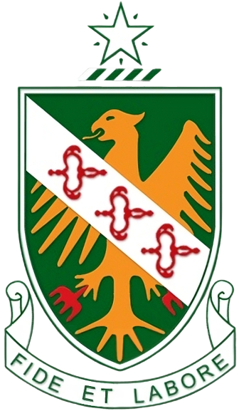
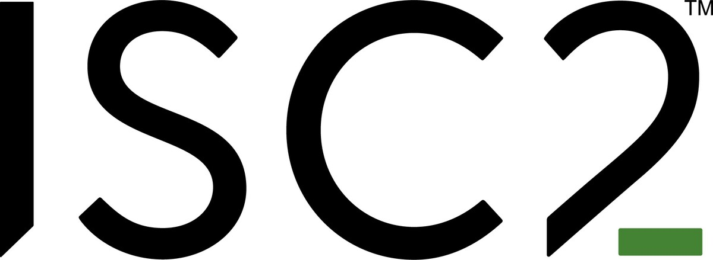

Certified Education
No matter which institution you enrolled in, either from primary, secondary or tertiary, knowledge is an investment which pays the best interest.

St. John's Institution
Pentaksiran Tingkatan 3 - 2016
Sijil Pelajaran Malaysia - 2018

Universiti Teknologi PETRONAS
Foundation in Electrical & Electronics Engineering - 2020
Bachelor in Information Technology (Honours) - 2023

ISC2
Certified in Cybersecurity (CC) - Nov 2023
CISCO
Cisco Certified Network Associate (CCNA) - Jan 2024